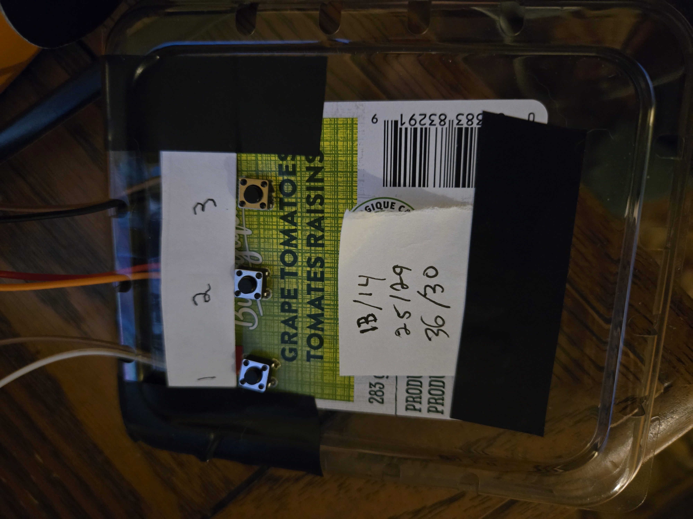
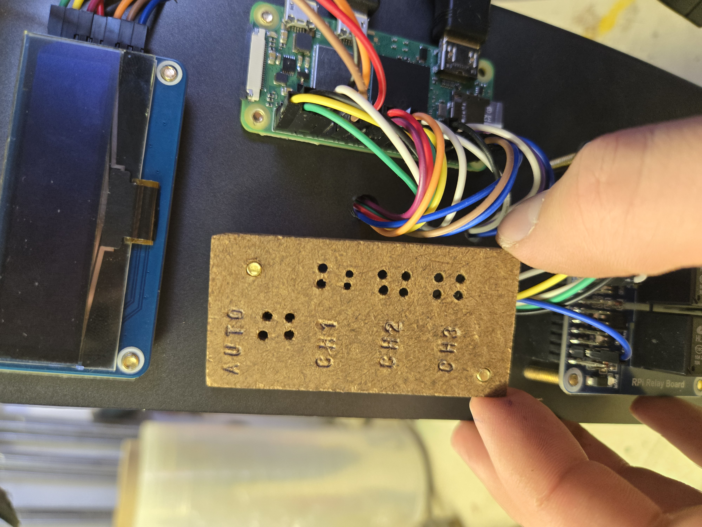
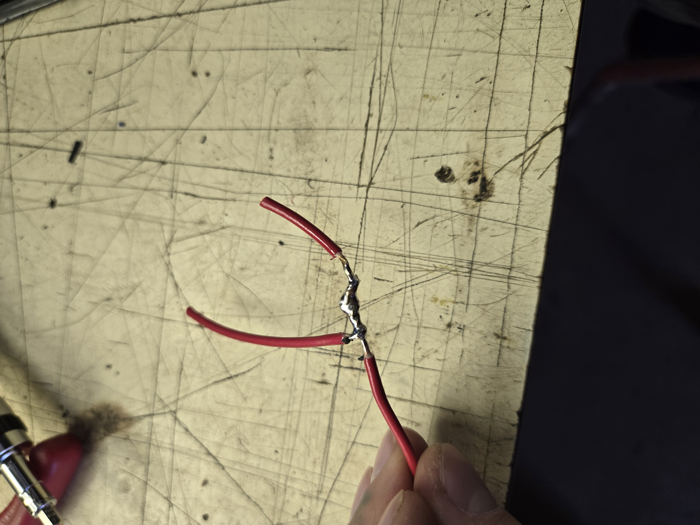

...page under construction...project in development...

This isn't fully accurate anymore I made some changes, like adding an additional few buttons

| Component | Cost |
|---|---|
| RPi 02w | $25.45 |
| Relay Board | $22.45 |
| DHT22 Sensor | $10.99 |
| Cermaic Heat Elem. | $6.49 |
| Mist Unit | $27.60 |
| Cooling Fan | $14 |
| 2.23" OLED | $20.95 |
| LED strip | $6.00 |
| 2 Step down Voltage Regulators | $5 |
| Micro submersable Pump | $4.49 |
| TOTAL | $138.56 |
|  | early relay testing I temporarily mounted buttons onto actual garbage lol. |
|  | Attatching components as well as Building a mount for 4 buttons. A switch between auto/hand operation. as well as 1 button for on/off of each relay. Considering about adding a small led light on this button mount board thing I made to indicate if your in auto or hand, but thats a bit overkill since I made a menu/text screen for the OLED |

| Stepping down + testing and adjusting voltages to suite my components. 24v -> 12v as well as a 24v -> 5v |  | soldering wirezz | 
| bundling them up nice |